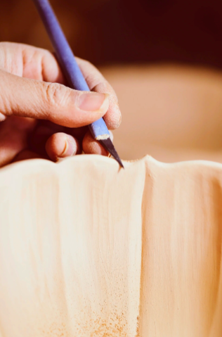

国家级非遗代表性传承人
康宁：针尖上的蜀绣灵魂
“绣架前坐下的那一刻，世界就安静了。一针一线，绣的是花鸟，守的是心性。”
作为蜀绣的领军人物，康宁大师在绣架前坚守了四十余载。她的针法严谨、色彩明快，尤其擅长表现动物的灵动与植物的清新。在她的指尖下，锦缎仿佛有了生命。康宁不仅追求技艺的极致，更致力于蜀绣的现代性转化，让古老绣种走进现代人的生活美学。
四十年来，她带徒数百人，不仅传授针法，更传递那份“耐得住寂寞”的匠人品格。在瞬息万变的时代表象下，康宁用一枚细针，挽留住了最慢的时光。
查看访谈录 →匠人精神 · 时代共振
在工业流水线的时代，非遗传承人们依然选择用双手去触碰材料的质感，用生命去丈量技艺的高度。这种“一生择一事”的执着，是浮躁社会的一剂清凉。传承不仅是技艺的简单复制，更是文化认同的延续。这些守艺人，就是巴渝文化最活色生香的载体。